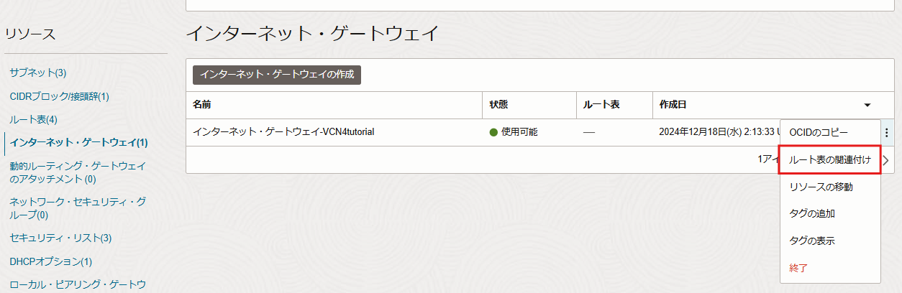
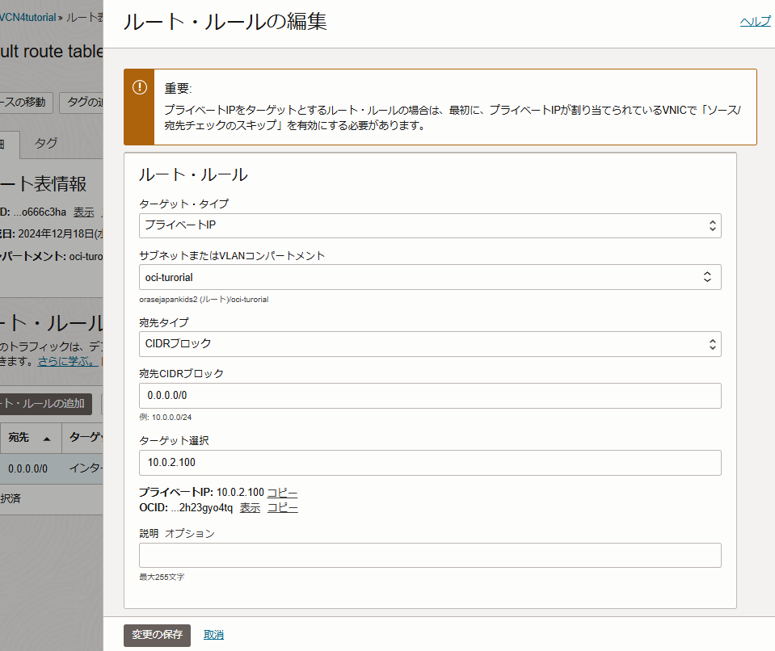

パロアルトネットワークスの次世代ファイアウォール技術を基に構築されたOCIクラウドネイティブのマネージド・ファイアウォール「OCI Network Firewall」が2022年7月にリリースされました。
「OCI Network Firewall」はURLフィルタリングやTSL/SSL検査などの機能を提供します。
本チュートリアルではOCI Network Firewallが使用できる環境を構築します。
所要時間 :
- 約70分
(このうちNetwork Firewallインスタンスの作成に40分ほどかかります)
前提条件 :
- ユーザーに必要なIAMポリシーが割り当てられていること。ポリシーの詳細はドキュメントを参照ください。
注意 :
- ※チュートリアル内の画面ショットについてはOracle Cloud Infrastructureの現在のコンソール画面と異なっている場合があります。
はじめに
以下が本チュートリアルで作成するNetwork Firewallの構成図です。

Network Firewallについて
Network FirewallはOCIクラウド環境に入るトラフィックと、サブネット間のトラフィックを可視化します。
Network Firewallはファイアウォールとして、Network Firewallを通過するトランスポート・レイヤー・セキュリティ（TLS）暗号化トラフィックを含むすべてのリクエストを検査し、ユーザーが構成したファイアウォール・ポリシー・ルールに基づいて、許可、拒否、ドロップ、侵入検出、防止などのアクションを実行します。
Network Firewallは以下のようなユースケースにてご利用いただくことが可能です。
- パロアルトネットワークスの脅威シグネチャおよび脅威分析エンジンを用いて、既知の脆弱性に対する攻撃、マルウェア、C&Cサーバー等の脅威の検知・防御
- アウトバウンドへの不正通信を識別し、機密性の高いデータ流出を抑止
各サブネットとルート表について
インターネットを経由してPublic Subnet内のインスタンスに対するインバウンドのトラフィックが発生すると、「Internet Gatewayルート表」のルールによりトラフィックはNFW SubnetにあるNetwork Firewallを通過します。その後Network Firewallによって検査されたトラフィックはPublic Subnet内のインスタンスへ転送されます。
Public Subnet内のインスタンスから発生するインターネットへのアウトバウンドのトラフィックも同様に、「Public Subnetルート表」のルールによりNetwork Firewallへ転送されます。その後、「NFW Subnetルート表」のルールにより、Network Firewallによって検査されたアウトバウンド通信はInternet Gatewayを介してインターネットに出ます。
1. ネットワークの構築
1-1. VCNの作成
OCIコンソール画面左上のメニューボタン → ネットワーキング → 仮想クラウド・ネットワーク → 「VCNの作成」ボタンをクリックします。

仮想クラウド・ネットワークの作成画面にて以下項目を入力し、残りはデフォルトのまま「VCNの作成」ボタンをクリックします。
名前- 任意 例）VCN1コンパートメント- VCNを作成したいコンパートメントを選択IPv4 CIDR Blocks- 10.0.0.0/16
1-2. Internet Gatewayの作成
手順1-1で作成したVCNの詳細画面の左下のリソースから「インターネット・ゲートウェイ」→「インターネット・ゲートウェイの作成」ボタンをクリックします。

「インターネット・ゲートウェイの作成」画面にて、任意のインターネット・ゲートウェイの名前を入力し、「インターネット・ゲートウェイの作成」ボタンをクリックします。

1-3. ルート表の作成
本チュートリアルでは、Internet Gatewayと各サブネット用のルート表を作成します。 手順1-1で作成したVCNの詳細画面の左下のリソースから「ルート表」を選択し、「ルート表の作成」ボタンをクリックします。
「ルート表の作成」画面にて、任意のインターネット・ゲートウェイ名を入力し、「作成」ボタンをクリックします。
- Internet Gateway用のルート表
名前- 任意 例）Route Table for IGW

- Network Firewallを配置するサブネット用のルート表
名前- 任意 例）Route Table for NFW Subnet

- コンピュートインスタンスを配置するサブネット用のルート表
名前- 任意 例）Route Table for Public Subnet

1-4. Security Listの作成
Network Firewallインスタンスを配置するサブネット、コンピュートインスタンスを配置するサブネットそれぞれのSecurity Listを作成します。 手順1-1で作成したVCNの詳細画面の左下のリソースから、「セキュリティ・リスト」→「セキュリティ・リストの作成」ボタンをクリックします。 表示された「セキュリティ・リストの作成」画面にて以下項目を入力し、「セキュリティ・リストの作成」ボタンをクリックします。
- Network Firewallインスタンスを配置するサブネットのSecurity List
名前- 任意 例）Security List for NFW Subnet

- コンピュートインスタンスを配置するサブネットのSecurity List
名前- 任意 例）Security List for Public Subnet

1-5. OCI Network Firewallインスタンスを配置するSubnetの作成
Network Firewallインスタンスを配置するサブネットを作成します。 手順1-1で作成したVCNの詳細画面の左下のリソースから、「サブネット」→「サブネットの作成」ボタンをクリックします。 表示された「サブネットの作成」画面にて、以下項目を入力し、「サブネットの作成」ボタンをクリックします。
名前- 任意 例）NFW Subnetサブネット・タイプ- リージョナルIPv4 CIDR Block- 10.0.2.0/24ルート表- 手順1-3で作成したNetwork Firewallを配置するサブネット用のルート表を選択サブネット・アクセス- パブリックDHCPオプション- default DHCP Optionsを選択（Default DHCP OptionsはVCNの作成時に自動的に作成されます）セキュリティ・リスト- 手順1-4で作成した、Network Firewallインスタンスを配置するサブネットのSecurity Listを選択

1-6. コンピュートインスタンスを配置するSubnetの作成
インスタンスを配置するサブネットを作成します。 手順1-1で作成したVCNの詳細画面の左下のリソースから、「サブネット」→「サブネットの作成」ボタンをクリックします。 表示された「サブネットの作成」画面にて、以下項目を入力し、「サブネットの作成」ボタンをクリックします。
名前- 任意 例）Public Subnetサブネット・タイプ- リージョナルIPv4 CIDR Block- 10.0.1.0/24ルート表- 手順1-3で作成したコンピュートインスタンスを配置するサブネット用のルート表を選択サブネット・アクセス- パブリックDHCPオプション- default DHCP Optionsを選択（Defualt DHCP OptionsはVCNの作成時に自動的に作成されます）セキュリティ・リスト- 手順1-4で作成した、コンピュートインスタンスを配置するサブネットのSecurity Listを選択
2. ネットワーク・ファイアウォール・ポリシーの作成
Network Firewallインスタンスを作成する際、ネットワーク・トラフィックを制御するルールをまとめたポリシー「ネットワーク・ファイアウォール・ポリシー」を指定する必要があるため、事前に用意します。
OCIコンソール画面左上のメニューボタン → アイデンティティとセキュリティ → ファイアウォール → ネットワーク・ファイアウォール・ポリシー → ネットワーク・ファイアウォール・ポリシーの作成をクリックします。 表示されたポリシーの作成画面にて任意のポリシー名を入力し、「ポリシーの作成」ボタンをクリックします。
ポリシーを作成すると、ポリシーの詳細画面が表示されます。

3. Network Firewall インスタンスの作成
続いてNetwork Firewallインスタンスを作成します。 OCIコンソール画面左上のメニューボタン → アイデンティティとセキュリティ → ファイアウォール → ネットワーク・ファイアウォール →「ネットワーク・ファイアウォールの作成」ボタンをクリックします。
表示された「ネットワーク・ファイアウォールの作成」画面にて以下項目を入力し、「ネットワーク・ファイアウォールの作成」ボタンをクリックします。
名前- 任意 例）NFW1ネットワーク・ファイアウォール・ポリシー- 手順2で作成したネットワーク・ファイアウォール・ポリシーを選択します。仮想クラウド・ネットワーク- 手順1-1で作成したVCNを選択します。サブネット- 手順1-5で作成したサブネットを選択します。ネットワーク・ファイアウォール可用性ドメイン- 任意 （今回はBUKv:AP-TOKYO-1-AD-1を選択します）

Network Firewallインスタンスは約40分程で作成が完了し、アクティブになります。
Network Firewallの作成中に、Network Firewallインスタンスの詳細画面にIPv4アドレスが表示されるので、IPv4アドレスが割り当てられたら次の手順にてVCNのSecurity Listとルート表を編集します。

4. ルート表の編集
Network FirewallのプライベートIPアドレスを元に、Internet Gatewayと各サブネットのルート表を編集します。
4-1. Internet Gatewayのルート表の編集
OCIコンソール画面左上のメニューボタン → ネットワーキング → 仮想クラウド・ネットワーク → 手順1で作成したVCN名をクリックし、VCNの詳細画面に遷移します。 VCN詳細画面左下のリソースから「ルート表」をクリックし、手順1-3で作成したInternet Gateway用のルート表をクリックします。
ルート表の詳細画面にて、「ルート・ルールの追加」ボタンをクリックします。 表示された「ルート・ルールの追加」画面にて、以下項目を入力し、画面左下の「ルート・ルールの追加」ボタンをクリックします。
ターゲット・タイプ- プライベートIP宛先タイプ- CIDRブロック宛先CIDRブロック- コンピュートインスタンスを配置するサブネットのCIDRを入力 例）10.0.1.0/24ターゲット選択- Network FirewallインスタンスのプライベートIPアドレスを入力

4-2. Network Firewallインスタンスを作成したサブネットのルート表の編集
続いて、VCN詳細画面左下のリソースの「ルート表」から、手順1-3で作成したNetwork Firewallインスタンスを配置するサブネット用のルート表をクリックします。

ルート表の詳細画面にて、「ルート・ルールの追加」ボタンをクリックします。 表示された「ルート・ルールの追加」画面にて、以下のルート・ルールを作成し、画面左下の「ルート・ルールの追加」ボタンをクリックします。
ターゲット・タイプ- インターネット・ゲートウェイ宛先CIDRブロック- 0.0.0.0/0ターゲット・インターネット・ゲートウェイ- 手順1-2で作成したInternet Gatewayを選択

4-3. コンピュートインスタンスを作成するサブネットのルート表の編集
続いて、VCN詳細画面左下のリソースの「ルート表」から、手順1-3で作成したコンピュートインスタンスを配置するサブネット用のルート表をクリックします。
ルート表の詳細画面にて、「ルート・ルールの追加」ボタンをクリックします。 表示された「ルート・ルールの追加」画面にて、以下項目を入力し、画面左下の「ルート・ルールの追加」ボタンをクリックします。
ターゲット・タイプ- プライベートIP宛先タイプ- CIDRブロック宛先CIDRブロック- 0.0.0.0/0ターゲット選択- Network FirewallインスタンスのプライベートIPアドレスを入力
4-4. Internet Gateway用のルート表をInternet Gatewayに紐づけ
VCN詳細画面左下のリソースの「インターネット・ゲートウェイ」から、手順1-2で作成したInternet Gatewayの左の3つの点をクリックし、「別のルート表の関連付け」を選択します。
表示された「別のルート表の関連付け」画面にて、手順1-3で作成したInternet Gateway用のルート表を選択し、「別のルート表の関連付け」ボタンをクリックします。
5. Security Listの編集
本チュートリアルでは便意的に全CIDRから各IPプロトコルの全ポート宛の通信を許可するよう設定します。実際に本番環境などで設定する際は必要最低限のポートのみ許可するように設定してください。
5-1. コンピュートインスタンスを立ち上げる用のサブネットのSecurity Listの編集
OCIコンソール画面左上のメニューボタン → ネットワーキング → 仮想クラウド・ネットワーク → 手順1で作成したVCN名をクリックし、VCNの詳細画面に遷移します。 VCN詳細画面左下のリソースから「セキュリティ・リスト」を選択し、手順1-4で作成したコンピュートインスタンスを立ち上げるサブネット用のSecurity List名をクリックします。
セキュリティ・リストの詳細画面で「イングレス・ルールの追加」ボタンをクリックします。 表示された「イングレス・ルールの追加」画面にて3つのイングレスルールを作成します。
- イングレス・ルール1
ソース・タイプ- CIDRソースCIDR- 0.0.0.0/0IPプロトコル- TCP
その他は記入せずに、「+別のイングレス・ルール」ボタンをクリックします。
- イングレス・ルール2
ソース・タイプ- CIDRソースCIDR- 0.0.0.0/0IPプロトコル- ICMP その他は記入せずに、「+別のイングレス・ルール」ボタンをクリックします。

以下のように、イングレス・ルール3を記入したら画面左下の「イングレス・ルールの追加」ボタンをクリックします。
- イングレス・ルール2
ソース・タイプ- CIDRソースCIDR- 0.0.0.0/0IPプロトコル- UDP

続いて、セキュリティ・リストの詳細画面左下の「リソース」から「エグレス・ルール」を選択し、「エグレス・ルールの追加」ボタンをクリックします。 表示された「エグレス・ルールの追加」画面にて、以下のようにエグレス・ルールを記入したら画面左下の「エグレス・ルールの追加」ボタンをクリックします。
宛先タイプ- CIDRソースCIDR- 0.0.0.0/0IPプロトコル- すべてのプロトコル

5-2. Network Firewallインスタンスを配置するサブネット用のSecurity Listの編集
VCN詳細画面左下のリソースから「セキュリティ・リスト」を選択し、手順1-4で作成したNetwork Firewallインスタンスを立ち上げるサブネット用のSecurity List名をクリックします。

セキュリティ・リストの詳細画面で「イングレス・ルールの追加」ボタンをクリックします。 表示された「イングレス・ルールの追加」画面にて3つのイングレスルールを作成します。
- イングレス・ルール1
ソース・タイプ- CIDRソースCIDR- 0.0.0.0/0IPプロトコル- TCP
その他は記入せずに、「+別のイングレス・ルール」ボタンをクリックします。
- イングレス・ルール2
ソース・タイプ- CIDRソースCIDR- 0.0.0.0/0IPプロトコル- ICMP その他は記入せずに、「+別のイングレス・ルール」ボタンをクリックします。
以下のように、イングレス・ルール3を記入したら画面左下の「イングレス・ルールの追加」ボタンをクリックします。
- イングレス・ルール2
ソース・タイプ- CIDRソースCIDR- 0.0.0.0/0IPプロトコル- UDP
続いて、セキュリティ・リストの詳細画面左下の「リソース」から「エグレス・ルール」を選択し、「エグレス・ルールの追加」ボタンをクリックします。 表示された「エグレス・ルールの追加」画面にて、以下のようにエグレス・ルールを記入したら画面左下の「エグレス・ルールの追加」ボタンをクリックします。
宛先タイプ- CIDRソースCIDR- 0.0.0.0/0IPプロトコル- すべてのプロトコル
6. コンピュートインスタンスの作成
つづくOCIチュートリアル「OCI Network Firewallの動作を検証する」にて動作を確認するため、Network Firewallに保護されたPublic Subnetにコンピュート・インスタンスを作成します。
作成するコンピュート・インスタンスはLinux/Windowsどちらでも構いません。
手順6-1ではLinuxインスタンスの作成方法、手順6-2ではWindowsインスタンスの作成方法を紹介しています。
6-1. Linuxのコンピュート・インスタンスの作成
OCIコンソール画面左上のメニューボタン → コンピュート → インスタンス → インスタンスの作成をクリックします。 「コンピュート・インスタンスの作成」画面にて、以下項目を入力し、画面左下の「作成」ボタンをクリックします。
名前- 任意 例）Instance1配置（可用性ドメイン）- 任意イメージ- Oracle Linux 8シェイプ- 任意ネットワーキング（仮想クラウド・ネットワーク）- 手順1-1で作成したVCNを選択ネットワーキング（サブネット）- 手順1-6で作成したサブネットを選択パブリックIPアドレス- 「パブリックIPv4アドレスの割当て」を選択SSHキーの追加- 「キー・ペアを自動で生成」を選択し、秘密キーと公開キーをそれぞれ保存します。（手元に既存のSSHキーがある場合は、「公開キー・ファイルのアップロード」または「公開キーの貼りつけ」を選択し、公開キーを登録してください。）

6-2. Windowsのインスタンスの作成
OCIコンソール画面左上のメニューボタン → コンピュート → インスタンス → インスタンスの作成をクリックします。 「コンピュート・インスタンスの作成」画面にて、以下項目を入力し、画面左下の「作成」ボタンをクリックします。
名前- 任意 例）WS1配置（可用性ドメイン）- 任意イメージ- 「イメージの変更」ボタンをクリックし、「Windows」を選択シェイプ- 任意ネットワーキング（仮想クラウド・ネットワーク）- 手順1-1で作成したVCNを選択ネットワーキング（サブネット）- 手順1-6で作成したサブネットを選択パブリックIPアドレス- 「パブリックIPv4アドレスの割当て」を選択


最後に手順3にて作成したNetwork Firewallインスタンスの作成が完了したことを確かめて、Network Firewallの構築は完了です。
手順2で作成したネットワーク・ファイアウォール・ポリシーにて、IDS/IPSやURLフィルタリング、SSLインスペクション等の機能が設定できます。
作成したFirewallの動作を検証するステップとして、サービス・リストとURLリストの動作検証を行うチュートリアル「OCI Network Firewallの動作検証を行う」もご用意していますので、是非行ってみてください。